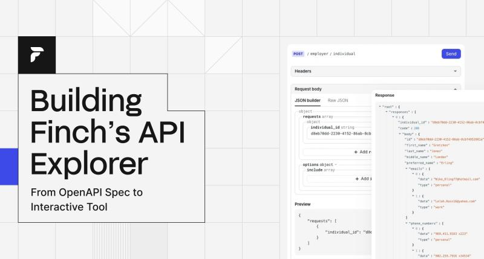

My Projects
Portfolio Website
A personal portfolio built with HTML, CSS, and JavaScript. Fully responsive and SEO optimized.
View Project
Task Manager App
A full-stack task manager built with React and Node.js. Features user auth, task categorization, and real-time updates.
View Project
API Explorer Tool
A developer utility tool for testing and documenting APIs. Built using Express.js and integrated Swagger.
View Project